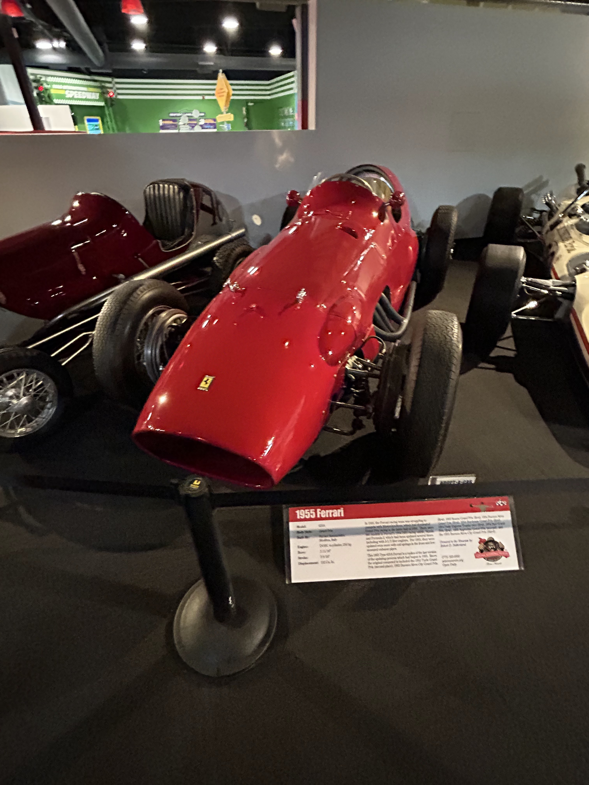
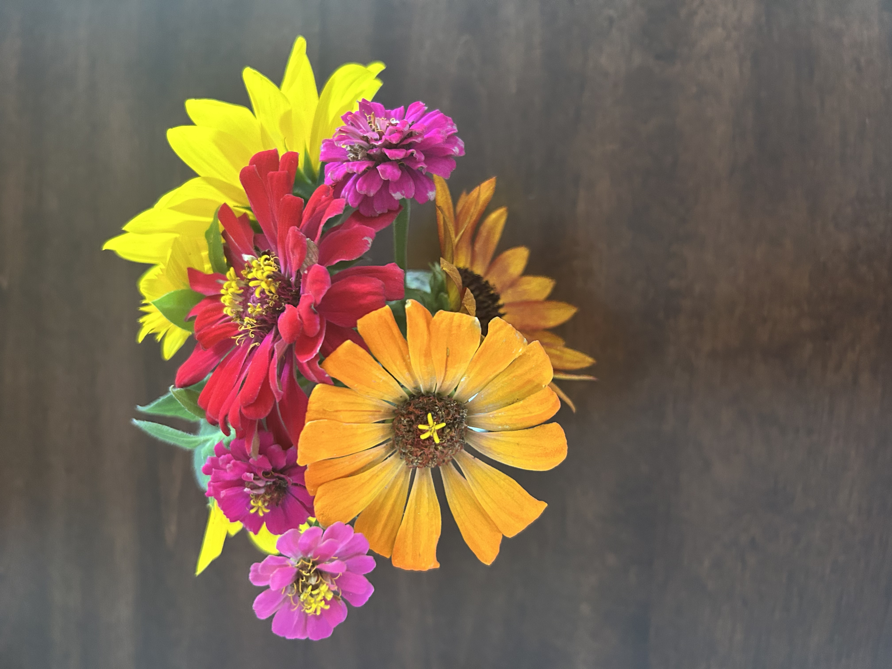

Photos hold memories, but the images themselves can be used to create something else. I like to take pictures, but I also like to mix in Photoshop. I like to think of it as another form of scrapbooking. Taking different pictures, rearranging them, and gluing them together to make something new. I don't think this would change the importance of the photos, but I think it's an opportunity to see what different photos can show when merged together. A photo can be anything, but more photos mean more possibilities.
Photos I have taken before




List of Photo Categories I'm into
- Landscape
- Food
- Art
- Amusement Parks
- Animals
- Flowers
- LEGOs
- Weather